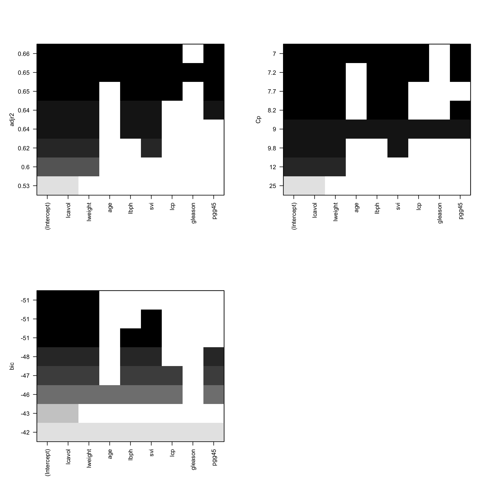

Here we use a dataset from the ElemStatLearn package.
data("prostate")
# take a look at the first few rows of the data
prostate %>% head() %>% kable()| lcavol | lweight | age | lbph | svi | lcp | gleason | pgg45 | lpsa | train |
|---|---|---|---|---|---|---|---|---|---|
| -0.5798185 | 2.769459 | 50 | -1.386294 | 0 | -1.386294 | 6 | 0 | -0.4307829 | TRUE |
| -0.9942523 | 3.319626 | 58 | -1.386294 | 0 | -1.386294 | 6 | 0 | -0.1625189 | TRUE |
| -0.5108256 | 2.691243 | 74 | -1.386294 | 0 | -1.386294 | 7 | 20 | -0.1625189 | TRUE |
| -1.2039728 | 3.282789 | 58 | -1.386294 | 0 | -1.386294 | 6 | 0 | -0.1625189 | TRUE |
| 0.7514161 | 3.432373 | 62 | -1.386294 | 0 | -1.386294 | 6 | 0 | 0.3715636 | TRUE |
| -1.0498221 | 3.228826 | 50 | -1.386294 | 0 | -1.386294 | 6 | 0 | 0.7654678 | TRUE |
training = filter(prostate, train==TRUE)[, 1:9]
test = filter(prostate, train==FALSE)[, 1:9]
# correlation matrix
cor(training) %>% kable()| lcavol | lweight | age | lbph | svi | lcp | gleason | pgg45 | lpsa | |
|---|---|---|---|---|---|---|---|---|---|
| lcavol | 1.0000000 | 0.3002320 | 0.2863243 | 0.0631677 | 0.5929491 | 0.6920431 | 0.4264141 | 0.4831614 | 0.7331551 |
| lweight | 0.3002320 | 1.0000000 | 0.3167235 | 0.4370415 | 0.1810545 | 0.1568286 | 0.0235582 | 0.0741663 | 0.4852152 |
| age | 0.2863243 | 0.3167235 | 1.0000000 | 0.2873464 | 0.1289023 | 0.1729514 | 0.3659151 | 0.2758057 | 0.2276424 |
| lbph | 0.0631677 | 0.4370415 | 0.2873464 | 1.0000000 | -0.1391468 | -0.0885346 | 0.0329922 | -0.0304038 | 0.2629376 |
| svi | 0.5929491 | 0.1810545 | 0.1289023 | -0.1391468 | 1.0000000 | 0.6712402 | 0.3068754 | 0.4813577 | 0.5568864 |
| lcp | 0.6920431 | 0.1568286 | 0.1729514 | -0.0885346 | 0.6712402 | 1.0000000 | 0.4764368 | 0.6625334 | 0.4892032 |
| gleason | 0.4264141 | 0.0235582 | 0.3659151 | 0.0329922 | 0.3068754 | 0.4764368 | 1.0000000 | 0.7570565 | 0.3424278 |
| pgg45 | 0.4831614 | 0.0741663 | 0.2758057 | -0.0304038 | 0.4813577 | 0.6625334 | 0.7570565 | 1.0000000 | 0.4480480 |
| lpsa | 0.7331551 | 0.4852152 | 0.2276424 | 0.2629376 | 0.5568864 | 0.4892032 | 0.3424278 | 0.4480480 | 1.0000000 |
lr_training = lm(lpsa~., data = training)
lr_training %>% summary()##
## Call:
## lm(formula = lpsa ~ ., data = training)
##
## Residuals:
## Min 1Q Median 3Q Max
## -1.64870 -0.34147 -0.05424 0.44941 1.48675
##
## Coefficients:
## Estimate Std. Error t value Pr(>|t|)
## (Intercept) 0.429170 1.553588 0.276 0.78334
## lcavol 0.576543 0.107438 5.366 1.47e-06 ***
## lweight 0.614020 0.223216 2.751 0.00792 **
## age -0.019001 0.013612 -1.396 0.16806
## lbph 0.144848 0.070457 2.056 0.04431 *
## svi 0.737209 0.298555 2.469 0.01651 *
## lcp -0.206324 0.110516 -1.867 0.06697 .
## gleason -0.029503 0.201136 -0.147 0.88389
## pgg45 0.009465 0.005447 1.738 0.08755 .
## ---
## Signif. codes: 0 '***' 0.001 '**' 0.01 '*' 0.05 '.' 0.1 ' ' 1
##
## Residual standard error: 0.7123 on 58 degrees of freedom
## Multiple R-squared: 0.6944, Adjusted R-squared: 0.6522
## F-statistic: 16.47 on 8 and 58 DF, p-value: 2.042e-12Obviously, some variables have non-significant coefficients. We should exclude these variables from our final model. Several variable selection methods are introduced below.
The step() function can be used to perform a stepwise model selection. We specify a lower model which only includes the intercept item and a upper model which includes all variables. We use one of the two models as an initial model and search the best model between the lower and upper models in forward, backward or both directions.
When the forward algorithm is selected, the lower model is used as the initial model. When the backward algorithm is selected, the upper model is used as the initial model. When the both is selected, either one of the two models can be used as the initial model.
# the null model which does not include any predictors
lr_null = lm(lpsa~1, data = training)
# the full model which include all predictors
lr_full = lm(lpsa~., data = training)
# forward stepwise
lr_forward = step(lr_null, scope = list(lower=lr_null, upper=lr_full), direction = 'forward')## Start: AIC=26.29
## lpsa ~ 1
##
## Df Sum of Sq RSS AIC
## + lcavol 1 51.753 44.529 -23.3736
## + svi 1 29.859 66.422 3.4199
## + lcp 1 23.042 73.239 9.9657
## + lweight 1 22.668 73.614 10.3071
## + pgg45 1 19.328 76.953 13.2799
## + gleason 1 11.290 84.992 19.9368
## + lbph 1 6.657 89.625 23.4930
## + age 1 4.989 91.292 24.7279
## <none> 96.281 26.2931
##
## Step: AIC=-23.37
## lpsa ~ lcavol
##
## Df Sum of Sq RSS AIC
## + lweight 1 7.4367 37.092 -33.617
## + lbph 1 4.5363 39.992 -28.572
## + svi 1 2.2160 42.313 -24.794
## <none> 44.529 -23.374
## + pgg45 1 1.1055 43.423 -23.058
## + gleason 1 0.1045 44.424 -21.531
## + lcp 1 0.0610 44.468 -21.465
## + age 1 0.0329 44.496 -21.423
##
## Step: AIC=-33.62
## lpsa ~ lcavol + lweight
##
## Df Sum of Sq RSS AIC
## + svi 1 2.18410 34.908 -35.683
## + pgg45 1 1.65781 35.434 -34.680
## <none> 37.092 -33.617
## + lbph 1 1.07668 36.015 -33.590
## + gleason 1 0.43335 36.658 -32.404
## + age 1 0.27462 36.817 -32.115
## + lcp 1 0.00206 37.090 -31.621
##
## Step: AIC=-35.68
## lpsa ~ lcavol + lweight + svi
##
## Df Sum of Sq RSS AIC
## + lbph 1 2.09275 32.815 -37.825
## <none> 34.908 -35.683
## + pgg45 1 0.83360 34.074 -35.302
## + lcp 1 0.63405 34.274 -34.911
## + gleason 1 0.30106 34.607 -34.263
## + age 1 0.19562 34.712 -34.059
##
## Step: AIC=-37.83
## lpsa ~ lcavol + lweight + svi + lbph
##
## Df Sum of Sq RSS AIC
## <none> 32.815 -37.825
## + pgg45 1 0.74555 32.069 -37.365
## + age 1 0.53056 32.284 -36.917
## + lcp 1 0.49216 32.323 -36.838
## + gleason 1 0.17815 32.637 -36.190# backward stepwise
lr_backward = step(lr_full, scope = list(lower=lr_null, upper=lr_full), direction = 'backward')## Start: AIC=-37.13
## lpsa ~ lcavol + lweight + age + lbph + svi + lcp + gleason +
## pgg45
##
## Df Sum of Sq RSS AIC
## - gleason 1 0.0109 29.437 -39.103
## <none> 29.426 -37.128
## - age 1 0.9886 30.415 -36.914
## - pgg45 1 1.5322 30.959 -35.727
## - lcp 1 1.7683 31.195 -35.218
## - lbph 1 2.1443 31.571 -34.415
## - svi 1 3.0934 32.520 -32.430
## - lweight 1 3.8390 33.265 -30.912
## - lcavol 1 14.6102 44.037 -12.118
##
## Step: AIC=-39.1
## lpsa ~ lcavol + lweight + age + lbph + svi + lcp + pgg45
##
## Df Sum of Sq RSS AIC
## <none> 29.437 -39.103
## - age 1 1.1025 30.540 -38.639
## - lcp 1 1.7583 31.196 -37.216
## - lbph 1 2.1354 31.573 -36.411
## - pgg45 1 2.3755 31.813 -35.903
## - svi 1 3.1665 32.604 -34.258
## - lweight 1 4.0048 33.442 -32.557
## - lcavol 1 14.8873 44.325 -13.681# both stepwise
lr_both = step(lr_null, scope = list(lower=lr_null, upper=lr_full), direction = 'both')## Start: AIC=26.29
## lpsa ~ 1
##
## Df Sum of Sq RSS AIC
## + lcavol 1 51.753 44.529 -23.3736
## + svi 1 29.859 66.422 3.4199
## + lcp 1 23.042 73.239 9.9657
## + lweight 1 22.668 73.614 10.3071
## + pgg45 1 19.328 76.953 13.2799
## + gleason 1 11.290 84.992 19.9368
## + lbph 1 6.657 89.625 23.4930
## + age 1 4.989 91.292 24.7279
## <none> 96.281 26.2931
##
## Step: AIC=-23.37
## lpsa ~ lcavol
##
## Df Sum of Sq RSS AIC
## + lweight 1 7.437 37.092 -33.617
## + lbph 1 4.536 39.992 -28.572
## + svi 1 2.216 42.313 -24.794
## <none> 44.529 -23.374
## + pgg45 1 1.105 43.423 -23.058
## + gleason 1 0.105 44.424 -21.531
## + lcp 1 0.061 44.468 -21.465
## + age 1 0.033 44.496 -21.423
## - lcavol 1 51.753 96.281 26.293
##
## Step: AIC=-33.62
## lpsa ~ lcavol + lweight
##
## Df Sum of Sq RSS AIC
## + svi 1 2.184 34.908 -35.683
## + pgg45 1 1.658 35.434 -34.680
## <none> 37.092 -33.617
## + lbph 1 1.077 36.015 -33.590
## + gleason 1 0.433 36.658 -32.404
## + age 1 0.275 36.817 -32.115
## + lcp 1 0.002 37.090 -31.621
## - lweight 1 7.437 44.529 -23.374
## - lcavol 1 36.522 73.614 10.307
##
## Step: AIC=-35.68
## lpsa ~ lcavol + lweight + svi
##
## Df Sum of Sq RSS AIC
## + lbph 1 2.0928 32.815 -37.825
## <none> 34.908 -35.683
## + pgg45 1 0.8336 34.074 -35.302
## + lcp 1 0.6341 34.274 -34.911
## + gleason 1 0.3011 34.607 -34.263
## + age 1 0.1956 34.712 -34.059
## - svi 1 2.1841 37.092 -33.617
## - lweight 1 7.4048 42.313 -24.794
## - lcavol 1 16.8065 51.714 -11.350
##
## Step: AIC=-37.83
## lpsa ~ lcavol + lweight + svi + lbph
##
## Df Sum of Sq RSS AIC
## <none> 32.815 -37.825
## + pgg45 1 0.7455 32.069 -37.365
## + age 1 0.5306 32.284 -36.917
## + lcp 1 0.4922 32.323 -36.838
## + gleason 1 0.1781 32.637 -36.190
## - lbph 1 2.0928 34.908 -35.683
## - lweight 1 3.1545 35.969 -33.675
## - svi 1 3.2002 36.015 -33.590
## - lcavol 1 15.7863 48.601 -13.510Summary of model results
## forward
lr_forward %>% summary()##
## Call:
## lm(formula = lpsa ~ lcavol + lweight + svi + lbph, data = training)
##
## Residuals:
## Min 1Q Median 3Q Max
## -1.8709 -0.3903 -0.0172 0.5676 1.4227
##
## Coefficients:
## Estimate Std. Error t value Pr(>|t|)
## (Intercept) -0.32592 0.77998 -0.418 0.6775
## lcavol 0.50552 0.09256 5.461 8.85e-07 ***
## lweight 0.53883 0.22071 2.441 0.0175 *
## svi 0.67185 0.27323 2.459 0.0167 *
## lbph 0.14001 0.07041 1.988 0.0512 .
## ---
## Signif. codes: 0 '***' 0.001 '**' 0.01 '*' 0.05 '.' 0.1 ' ' 1
##
## Residual standard error: 0.7275 on 62 degrees of freedom
## Multiple R-squared: 0.6592, Adjusted R-squared: 0.6372
## F-statistic: 29.98 on 4 and 62 DF, p-value: 6.911e-14## backward
lr_backward %>% summary()##
## Call:
## lm(formula = lpsa ~ lcavol + lweight + age + lbph + svi + lcp +
## pgg45, data = training)
##
## Residuals:
## Min 1Q Median 3Q Max
## -1.65425 -0.34471 -0.05615 0.44380 1.48952
##
## Coefficients:
## Estimate Std. Error t value Pr(>|t|)
## (Intercept) 0.259062 1.025170 0.253 0.8014
## lcavol 0.573930 0.105069 5.462 9.88e-07 ***
## lweight 0.619209 0.218560 2.833 0.0063 **
## age -0.019480 0.013105 -1.486 0.1425
## lbph 0.144426 0.069812 2.069 0.0430 *
## svi 0.741781 0.294451 2.519 0.0145 *
## lcp -0.205417 0.109424 -1.877 0.0654 .
## pgg45 0.008945 0.004099 2.182 0.0331 *
## ---
## Signif. codes: 0 '***' 0.001 '**' 0.01 '*' 0.05 '.' 0.1 ' ' 1
##
## Residual standard error: 0.7064 on 59 degrees of freedom
## Multiple R-squared: 0.6943, Adjusted R-squared: 0.658
## F-statistic: 19.14 on 7 and 59 DF, p-value: 4.496e-13## both
lr_both %>% summary()##
## Call:
## lm(formula = lpsa ~ lcavol + lweight + svi + lbph, data = training)
##
## Residuals:
## Min 1Q Median 3Q Max
## -1.8709 -0.3903 -0.0172 0.5676 1.4227
##
## Coefficients:
## Estimate Std. Error t value Pr(>|t|)
## (Intercept) -0.32592 0.77998 -0.418 0.6775
## lcavol 0.50552 0.09256 5.461 8.85e-07 ***
## lweight 0.53883 0.22071 2.441 0.0175 *
## svi 0.67185 0.27323 2.459 0.0167 *
## lbph 0.14001 0.07041 1.988 0.0512 .
## ---
## Signif. codes: 0 '***' 0.001 '**' 0.01 '*' 0.05 '.' 0.1 ' ' 1
##
## Residual standard error: 0.7275 on 62 degrees of freedom
## Multiple R-squared: 0.6592, Adjusted R-squared: 0.6372
## F-statistic: 29.98 on 4 and 62 DF, p-value: 6.911e-14From the results above we can see that some variables in the final models are NOT significant. How to explain this? Should we include these non-significant variables in our final model?
The step() selects the model based on the AIC, not the p-value. It uses the argument \(k\) to set a threshold and determine if a variable should be include in the model or know. By default \(k = 2\), which set up a threshold for the p value to pchisq(2, 1, lower.tail = F), which is 0.1572992. That means only variables with p-value < 0.1572992 will be excluded from the model. To set the p-value threshold to 0.05, we need to adjust the k argument value to qchisq(0.05, 1, lower.tail = F), which is 3.8414588.
Let’s re-fit our models with \(k = qchisq(0.05, 1, lower.tail = F)\).
# forward stepwise
lr_forward_new = step(lr_null, scope = list(lower=lr_null, upper=lr_full),
direction = 'forward', k = qchisq(0.05, 1, lower.tail = F))## Start: AIC=28.13
## lpsa ~ 1
##
## Df Sum of Sq RSS AIC
## + lcavol 1 51.753 44.529 -19.6907
## + svi 1 29.859 66.422 7.1028
## + lcp 1 23.042 73.239 13.6487
## + lweight 1 22.668 73.614 13.9901
## + pgg45 1 19.328 76.953 16.9628
## + gleason 1 11.290 84.992 23.6197
## + lbph 1 6.657 89.625 27.1759
## <none> 96.281 28.1345
## + age 1 4.989 91.292 28.4108
##
## Step: AIC=-19.69
## lpsa ~ lcavol
##
## Df Sum of Sq RSS AIC
## + lweight 1 7.4367 37.092 -28.092
## + lbph 1 4.5363 39.992 -23.048
## <none> 44.529 -19.691
## + svi 1 2.2160 42.313 -19.269
## + pgg45 1 1.1055 43.423 -17.534
## + gleason 1 0.1045 44.424 -16.007
## + lcp 1 0.0610 44.468 -15.941
## + age 1 0.0329 44.496 -15.899
##
## Step: AIC=-28.09
## lpsa ~ lcavol + lweight
##
## Df Sum of Sq RSS AIC
## + svi 1 2.18410 34.908 -28.317
## <none> 37.092 -28.092
## + pgg45 1 1.65781 35.434 -27.314
## + lbph 1 1.07668 36.015 -26.225
## + gleason 1 0.43335 36.658 -25.038
## + age 1 0.27462 36.817 -24.749
## + lcp 1 0.00206 37.090 -24.255
##
## Step: AIC=-28.32
## lpsa ~ lcavol + lweight + svi
##
## Df Sum of Sq RSS AIC
## + lbph 1 2.09275 32.815 -28.618
## <none> 34.908 -28.317
## + pgg45 1 0.83360 34.074 -26.095
## + lcp 1 0.63405 34.274 -25.704
## + gleason 1 0.30106 34.607 -25.056
## + age 1 0.19562 34.712 -24.852
##
## Step: AIC=-28.62
## lpsa ~ lcavol + lweight + svi + lbph
##
## Df Sum of Sq RSS AIC
## <none> 32.815 -28.618
## + pgg45 1 0.74555 32.069 -26.316
## + age 1 0.53056 32.284 -25.868
## + lcp 1 0.49216 32.323 -25.789
## + gleason 1 0.17815 32.637 -25.141# backward stepwise
lr_backward_new = step(lr_full, scope = list(lower=lr_null, upper=lr_full),
direction = 'backward', k = qchisq(0.05, 1, lower.tail = F))## Start: AIC=-20.55
## lpsa ~ lcavol + lweight + age + lbph + svi + lcp + gleason +
## pgg45
##
## Df Sum of Sq RSS AIC
## - gleason 1 0.0109 29.437 -24.3711
## - age 1 0.9886 30.415 -22.1821
## - pgg45 1 1.5322 30.959 -20.9951
## <none> 29.426 -20.5545
## - lcp 1 1.7683 31.195 -20.4861
## - lbph 1 2.1443 31.571 -19.6833
## - svi 1 3.0934 32.520 -17.6988
## - lweight 1 3.8390 33.265 -16.1800
## - lcavol 1 14.6102 44.037 2.6137
##
## Step: AIC=-24.37
## lpsa ~ lcavol + lweight + age + lbph + svi + lcp + pgg45
##
## Df Sum of Sq RSS AIC
## - age 1 1.1025 30.540 -25.749
## <none> 29.437 -24.371
## - lcp 1 1.7583 31.196 -24.326
## - lbph 1 2.1354 31.573 -23.521
## - pgg45 1 2.3755 31.813 -23.013
## - svi 1 3.1665 32.604 -21.368
## - lweight 1 4.0048 33.442 -19.667
## - lcavol 1 14.8873 44.325 -0.791
##
## Step: AIC=-25.75
## lpsa ~ lcavol + lweight + lbph + svi + lcp + pgg45
##
## Df Sum of Sq RSS AIC
## - lcp 1 1.5297 32.069 -26.3161
## - lbph 1 1.6778 32.218 -26.0074
## - pgg45 1 1.7831 32.323 -25.7888
## <none> 30.540 -25.7492
## - svi 1 3.2957 33.836 -22.7244
## - lweight 1 3.4138 33.954 -22.4911
## - lcavol 1 13.9954 44.535 -4.3149
##
## Step: AIC=-26.32
## lpsa ~ lcavol + lweight + lbph + svi + pgg45
##
## Df Sum of Sq RSS AIC
## - pgg45 1 0.7455 32.815 -28.6178
## <none> 32.069 -26.3161
## - lbph 1 2.0047 34.074 -26.0950
## - svi 1 2.1873 34.257 -25.7368
## - lweight 1 3.4238 35.493 -23.3611
## - lcavol 1 12.6227 44.692 -7.9207
##
## Step: AIC=-28.62
## lpsa ~ lcavol + lweight + lbph + svi
##
## Df Sum of Sq RSS AIC
## <none> 32.815 -28.618
## - lbph 1 2.0928 34.908 -28.317
## - lweight 1 3.1545 35.969 -26.310
## - svi 1 3.2002 36.015 -26.225
## - lcavol 1 15.7863 48.601 -6.144# both stepwise
lr_both_new = step(lr_null, scope = list(lower=lr_null, upper=lr_full),
direction = 'both', k = qchisq(0.05, 1, lower.tail = F))## Start: AIC=28.13
## lpsa ~ 1
##
## Df Sum of Sq RSS AIC
## + lcavol 1 51.753 44.529 -19.6907
## + svi 1 29.859 66.422 7.1028
## + lcp 1 23.042 73.239 13.6487
## + lweight 1 22.668 73.614 13.9901
## + pgg45 1 19.328 76.953 16.9628
## + gleason 1 11.290 84.992 23.6197
## + lbph 1 6.657 89.625 27.1759
## <none> 96.281 28.1345
## + age 1 4.989 91.292 28.4108
##
## Step: AIC=-19.69
## lpsa ~ lcavol
##
## Df Sum of Sq RSS AIC
## + lweight 1 7.437 37.092 -28.092
## + lbph 1 4.536 39.992 -23.048
## <none> 44.529 -19.691
## + svi 1 2.216 42.313 -19.269
## + pgg45 1 1.105 43.423 -17.534
## + gleason 1 0.105 44.424 -16.007
## + lcp 1 0.061 44.468 -15.941
## + age 1 0.033 44.496 -15.899
## - lcavol 1 51.753 96.281 28.134
##
## Step: AIC=-28.09
## lpsa ~ lcavol + lweight
##
## Df Sum of Sq RSS AIC
## + svi 1 2.184 34.908 -28.317
## <none> 37.092 -28.092
## + pgg45 1 1.658 35.434 -27.314
## + lbph 1 1.077 36.015 -26.225
## + gleason 1 0.433 36.658 -25.038
## + age 1 0.275 36.817 -24.749
## + lcp 1 0.002 37.090 -24.255
## - lweight 1 7.437 44.529 -19.691
## - lcavol 1 36.522 73.614 13.990
##
## Step: AIC=-28.32
## lpsa ~ lcavol + lweight + svi
##
## Df Sum of Sq RSS AIC
## + lbph 1 2.0928 32.815 -28.6178
## <none> 34.908 -28.3171
## - svi 1 2.1841 37.092 -28.0924
## + pgg45 1 0.8336 34.074 -26.0950
## + lcp 1 0.6341 34.274 -25.7038
## + gleason 1 0.3011 34.607 -25.0560
## + age 1 0.1956 34.712 -24.8521
## - lweight 1 7.4048 42.313 -19.2694
## - lcavol 1 16.8065 51.714 -5.8259
##
## Step: AIC=-28.62
## lpsa ~ lcavol + lweight + svi + lbph
##
## Df Sum of Sq RSS AIC
## <none> 32.815 -28.618
## - lbph 1 2.0928 34.908 -28.317
## + pgg45 1 0.7455 32.069 -26.316
## - lweight 1 3.1545 35.969 -26.310
## - svi 1 3.2002 36.015 -26.225
## + age 1 0.5306 32.284 -25.868
## + lcp 1 0.4922 32.323 -25.789
## + gleason 1 0.1781 32.637 -25.141
## - lcavol 1 15.7863 48.601 -6.144lr_forward_new %>% summary()##
## Call:
## lm(formula = lpsa ~ lcavol + lweight + svi + lbph, data = training)
##
## Residuals:
## Min 1Q Median 3Q Max
## -1.8709 -0.3903 -0.0172 0.5676 1.4227
##
## Coefficients:
## Estimate Std. Error t value Pr(>|t|)
## (Intercept) -0.32592 0.77998 -0.418 0.6775
## lcavol 0.50552 0.09256 5.461 8.85e-07 ***
## lweight 0.53883 0.22071 2.441 0.0175 *
## svi 0.67185 0.27323 2.459 0.0167 *
## lbph 0.14001 0.07041 1.988 0.0512 .
## ---
## Signif. codes: 0 '***' 0.001 '**' 0.01 '*' 0.05 '.' 0.1 ' ' 1
##
## Residual standard error: 0.7275 on 62 degrees of freedom
## Multiple R-squared: 0.6592, Adjusted R-squared: 0.6372
## F-statistic: 29.98 on 4 and 62 DF, p-value: 6.911e-14lr_backward_new %>% summary()##
## Call:
## lm(formula = lpsa ~ lcavol + lweight + lbph + svi, data = training)
##
## Residuals:
## Min 1Q Median 3Q Max
## -1.8709 -0.3903 -0.0172 0.5676 1.4227
##
## Coefficients:
## Estimate Std. Error t value Pr(>|t|)
## (Intercept) -0.32592 0.77998 -0.418 0.6775
## lcavol 0.50552 0.09256 5.461 8.85e-07 ***
## lweight 0.53883 0.22071 2.441 0.0175 *
## lbph 0.14001 0.07041 1.988 0.0512 .
## svi 0.67185 0.27323 2.459 0.0167 *
## ---
## Signif. codes: 0 '***' 0.001 '**' 0.01 '*' 0.05 '.' 0.1 ' ' 1
##
## Residual standard error: 0.7275 on 62 degrees of freedom
## Multiple R-squared: 0.6592, Adjusted R-squared: 0.6372
## F-statistic: 29.98 on 4 and 62 DF, p-value: 6.911e-14lr_both_new %>% summary()##
## Call:
## lm(formula = lpsa ~ lcavol + lweight + svi + lbph, data = training)
##
## Residuals:
## Min 1Q Median 3Q Max
## -1.8709 -0.3903 -0.0172 0.5676 1.4227
##
## Coefficients:
## Estimate Std. Error t value Pr(>|t|)
## (Intercept) -0.32592 0.77998 -0.418 0.6775
## lcavol 0.50552 0.09256 5.461 8.85e-07 ***
## lweight 0.53883 0.22071 2.441 0.0175 *
## svi 0.67185 0.27323 2.459 0.0167 *
## lbph 0.14001 0.07041 1.988 0.0512 .
## ---
## Signif. codes: 0 '***' 0.001 '**' 0.01 '*' 0.05 '.' 0.1 ' ' 1
##
## Residual standard error: 0.7275 on 62 degrees of freedom
## Multiple R-squared: 0.6592, Adjusted R-squared: 0.6372
## F-statistic: 29.98 on 4 and 62 DF, p-value: 6.911e-14The best subset method is an exhaustive method which search the whole model space. The best model is selected based on a criterion, such as ‘Mellow’s Cp’, ‘BIC’, or adjusted \(R^2\).
The regsubsets() from the leaps package implements this algorithm.
## best subset
lr_best_subset = regsubsets(lpsa~., data = training)We can plot the best models based on different criteria.
layout(mat = matrix(c(1,1,2,2,3,3,0,0), 4, byrow = FALSE))
plot(lr_best_subset, scale = 'adjr2')
plot(lr_best_subset, scale = 'bic')
plot(lr_best_subset, scale = 'Cp')
We need to select the model with largest adjr2, smallest Cp and smallest BIC. However, most of time these three criteria won’t give the same best model. When this occurs, we need to do a trade-off. The best model should have a high adjr2 but low complexity (less variables).
In this case, we can select the model lpsa ~ 1 + lcavol + lweight + lbph + svi as our best model.